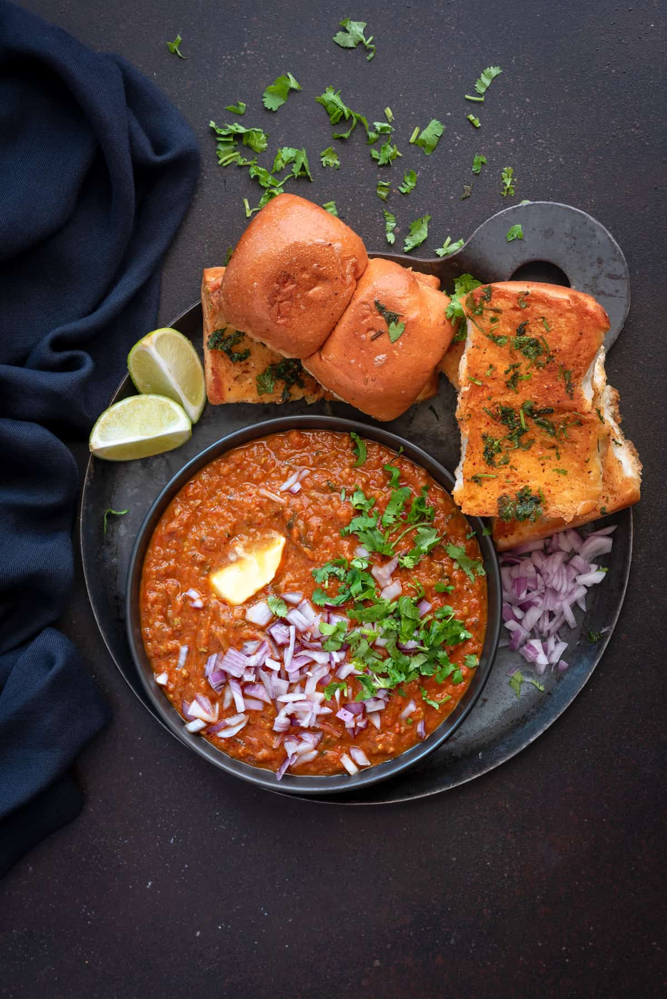

Pav Bhaji

Pav Bhaji is a beloved street food from Mumbai, India. It features a flavorful, spicy mixture of mashed vegetables paired with soft dinner rolls. The term "Pav" refers to the bread, while "Bhaji" means vegetables. The dish is seasoned with a unique spice mix called pav bhaji masala and is typically topped with generous amounts of butter and fresh cilantro.
Ingredients
- Vegetables: bhaji is made with mixed vegetables and the most commonly used vegetables in pav bhaji are potatoes, onions, green peppers, peas. Carrots, beets, beans are also commonly used.
- Spices:
- Cumin seeds
- Pav bhaji masala: the main flavor in the bhaji comes from a special blend of spices known as pav bhaji masala. You can get it from Indian grocery store (like Patel Brothers).
- Kashmiri red chili powder: this is added mainly for color. Do not confuse it with regular chili powder, this one isn't hot.
- Butter: there's no good pav bhaji without lots of butter! I love using amul butter in my pav bhaji.
- Tomato puree: along with fresh tomatoes, I also like adding some store bought tomato puree for extra flavor. I would highly recommend not skipping it.
- Garnishes: to finish the pav bhaji, you would need a good squeeze of lemon juice and lots of cilantro.
- Pav: eggless dinner rolls. You can find them at Indian grocery stores or you can also make them at home.
How to Make Pav Bhaji - Step by Step Instructions
- Boil the veggies first and keep them ready.
- Heat 1 tablespoon of butter and oil in a large pot on medium heat. Once the butter melts and oil is hot, add the cumin seeds and let them sizzle.
- Add chopped onions and mix. I like to use my food processor to chop them really fine.
- Cook the onions for around 4 minutes until golden brown in color. Add finely chopped ginger, garlic, and green chili. Cook for 1 minute.
- Add chopped tomatoes and mix well. Let the tomatoes cook for 2 minutes.
- Add tomato puree, 1/4 cup water and 1/4 teaspoon salt. Cover the pan and let the tomato cook for 6 minutes until softened and completely cooked.
- Add the pav bhaji masala, Kashmiri red chili powder, red chili powder, and 1 teaspoon of salt.
- Stir in the boiled veggies and mix.
- Using a potato masher, mash the veggies until they are completely mixed with the masala.
- Add 3/4-1 cup of water and mix. Use an immersion blender to blend the veggies to a paste like consistency.
- Cover the pot and set heat to low. Let the bhaji simmer on low heat for 15 minutes.
- Open the pot and add in 2 tablespoons of butter.
- Add a generous amount of chopped cilantro.
- Then add in juice of 1 large lemon. Let the bhaji simmer for 2 more minutes and then remove pan from heat.
- To toast the pav, melt butter on a pan. Sprinkle some pav bhaji masala on top of the butter and then place the buns on the pan.
- Press to toast the pav until crisp and golden brown from both sides.